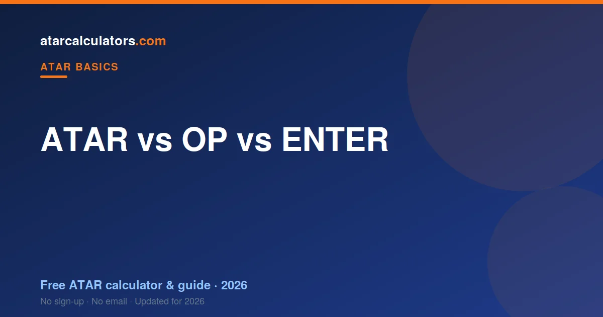

The OP, ENTER, UAI and TER were all older Year 12 ranking systems, one per state. They did the same job as today's ATAR: rank students for university entry. Most states replaced them with the national ATAR around 2009 and 2010, and Queensland moved from the OP to the ATAR in 2020. They are all ranks, not marks, so the core idea has never changed.
Key takeaways
- The OP, ENTER, UAI and TER were all older, state-based Year 12 ranks.
- They did the same job as the ATAR — ranking students for university entry.
- The ATAR replaced them nationally around 2009–2010.
- Queensland kept the OP until 2020, the last state to switch.
- The OP ran 1 to 25 (1 was best); the ATAR runs 0.00 to 99.95 (higher is better).
- The ENTER, UAI and TER were already on the ATAR's scale, so their conversion is closer than the OP's.
- The OP used 25 broad bands; the ATAR uses 0.05 increments, so no exact OP-to-ATAR conversion is possible.
- All of them are ranks, not marks. An ATAR of 80 means top 20%, not 80%.

Why states used to have different systems
For most of the twentieth century, education in Australia was organised state by state. Section 51 of the Australian Constitution, which lists the Commonwealth's powers, does not include education, so each state built its own senior secondary certificate, its own exams and its own tertiary entrance rank. By the 1990s there were six distinct certificates and two territory equivalents: the HSC in New South Wales, the VCE in Victoria, the QCE in Queensland, SACE in South Australia, WACE in Western Australia, the TCE in Tasmania, the ACT Senior Secondary Certificate, and the NTCET in the Northern Territory.
Within a state the system worked well. Across borders it caused problems. Universities receiving applications from multiple states had to translate between a Queensland OP of 5, a Victorian ENTER of 92 and a NSW UAI of 85. Admissions centres used conversion tables, but these were approximations, and students who moved interstate sometimes found their rank interpreted differently by different universities.
The push for a national rank gathered momentum in the 2000s, driven by student mobility, the Bradley Review of Higher Education in 2008, the demand-driven funding system from 2012, and the growing technical feasibility of calculating a national percentile rank. In June 2009 the federal government announced a uniform national ranking system, and the name ATAR was agreed by the Australasian Conference of Tertiary Admission Centres (ACTAC) in 2008. Most states adopted it from 2009 or 2010. Queensland, with its deeply embedded school-based assessment culture, retained the OP for another decade.
The OP: Queensland's old system
Queensland's Overall Position ran from 1992 to 2019 as a band from 1 to 25, where 1 was the best and 25 the lowest. This reverse scale is the biggest source of confusion: a low OP was a strong result. The OP was built on Queensland's distinctive school-based assessment system, in which teachers marked tasks that were moderated across schools. It was calculated from Authority subjects, required students to sit the Queensland Core Skills (QCS) Test and study a minimum number of Authority subjects, and was divided into 25 bands from a statewide ranking.
The OP was bell-curved: relatively few students received OP 1 or OP 25, with the largest concentrations in the middle. In 2018, 733 students received an OP 1, out of a cohort of roughly 50,000 OP-eligible students. Over time the proportion of OP-eligible students declined from about 80% in 1992 to about 49.7% by 2018, which raised questions about whether the OP represented the full Year 12 cohort. The OP also had practical limitations: 25 bands were too coarse for competitive courses, students could not see where within a band they sat, and the 1–25 scale was hard to compare interstate. These were part of the case for change. See how ATAR is calculated in QLD today.
The ENTER: Victoria's old system
Victoria's Equivalent National Tertiary Entrance Rank ran from 1998 to 2009. Despite the name, it worked almost exactly like today's ATAR: a rank from 0.00 to 99.95, where higher was better, calculated from scaled VCE study scores and reported in increments of 0.05. It replaced an earlier Victorian TER (1994–1998) and was designed to be equivalent to the UAI used in NSW and the ACT.
For Victorian students, the transition to the ATAR in 2009–2010 was largely a change of name and a small adjustment to the top of the scale. VTAC described it as a name change only, because the underlying calculation was the same. A student who understood the ENTER already understood the ATAR. See how ATAR is calculated in VIC.
The UAI: NSW and the ACT
New South Wales and the ACT used the Universities Admission Index from 1998 to 2008. It was calculated from scaled HSC marks and reported on a scale up to 100, in increments of 0.05. Like every other rank in this guide, the UAI was a percentile rank, not a percentage: a UAI of 80 meant a student had performed better than approximately 80% of the eligible cohort, not that they scored 80%.
The introduction of the UAI also involved a change in the reference cohort: before 1998 the ranking was based only on HSC students eligible for a Tertiary Entrance Rank, but from 1998 the reference cohort was changed to the Year 10 cohort two years previous. When NSW and the ACT adopted the ATAR in 2009, the top UAI of 100 became an ATAR of 99.95 — not a downgrade, but a reporting convention reflecting the fact that the ATAR is capped to represent a percentile position, not a perfect score. See how ATAR is calculated in NSW.
| UAI | Comparable ATAR | UAI | Comparable ATAR |
|---|---|---|---|
| 100.00 | 99.95 | 85.00 | 86.25 |
| 95.00 | 95.40 | 80.00 | 81.65 |
| 90.00 | 90.80 | 70.00 | 72.55 |
Source: UAC, ATAR conversion table based on 2008 UAI data.
The TER: SA, WA, NT and Tasmania
The Tertiary Entrance Rank was used in South Australia, Western Australia, the Northern Territory and Tasmania, and at various times in Victoria and NSW. It was a percentile-style rank where higher numbers represented stronger results, and it served the same purpose as the other state ranks: to rank school leavers for university admission.
Because the TER was used across multiple jurisdictions, its exact calculation varied. In South Australia and the Northern Territory, SATAC built the TER on a university aggregate out of 90, calculated from the best four scalable Stage 2 SACE subjects plus half of the fifth. In Western Australia, the TER derived from the Tertiary Entrance Score (TES), calculated by multiplying an applicant's best mean scaled score over four or five Tertiary Entrance Examination subjects, with scaling by Average Marks Scaling (AMS). In Tasmania, the TER was calculated from the best three subject scores in pre-tertiary Year 12 subjects.
One of the most important features of the TER era was the Interstate Transfer Index, which allowed universities to compare students from different states on a common basis. From 1998 onwards, the measure in NSW, the ACT, Victoria, South Australia, the Northern Territory, Western Australia and Tasmania was effectively the same, with different names — the UAI, ENTER and TER were expressions of the same underlying percentile scale. Queensland was the exception because the OP used a 1–25 band system rather than a 0.00–99.95 scale.
All five systems at a glance
| Feature | OP | ENTER | UAI | TER | ATAR |
|---|---|---|---|---|---|
| Where | QLD | VIC | NSW/ACT | SA, WA, NT, Tas | All Australia |
| Scale | 1–25 | 0.00–99.95 | Up to 100 | Percentile rank | 0.00–99.95 |
| Direction | 1 = best | Higher = better | Higher = better | Higher = better | Higher = better |
| Years active | 1992–2019 | 1998–2009 | 1998–2008 | Various, until ~2009 | 2009–present (QLD 2020) |
| Replaced by ATAR | 2020 | 2009–2010 | 2009 | 2009–2010 | — |
Only the OP ran “backwards”, with 1 as the top. Every other system, and the ATAR, put the high numbers at the top.
Converting an old score to an ATAR
The short answer is: approximately, but not exactly. The OP is the hardest to convert because its bands are broad; the ENTER, UAI and TER are easier because they were already fine-grained ranks close to the ATAR's scale. QTAC itself states that there is no possible direct translation between the OP and the ATAR, so the honest approach is to give a range rather than a single number.
| OP band | Approximate ATAR range | OP band | Approximate ATAR range |
|---|---|---|---|
| OP 1 | 98.85 – 99.95 | OP 11 | 75.05 – 77.80 |
| OP 2 | 97.30 – 98.80 | OP 12 | 72.15 – 75.00 |
| OP 3 | 95.50 – 97.25 | OP 13 | 69.15 – 72.10 |
| OP 4 | 93.40 – 95.45 | OP 14 | 66.00 – 69.10 |
| OP 5 | 91.15 – 93.35 | OP 15 | 62.55 – 65.95 |
| OP 6 | 88.75 – 91.10 | OP 16 | 58.90 – 62.50 |
| OP 7 | 86.25 – 88.70 | OP 17 | 55.10 – 58.85 |
| OP 8 | 83.50 – 86.20 | OP 18 | 51.20 – 55.05 |
| OP 9 | 80.70 – 83.45 | OP 19 | 47.20 – 51.15 |
| OP 10 | 77.85 – 80.65 | OP 20 | 41.00 – 47.15 |
| OP 21 | 30.00 – 40.95 | OP 22–25 | 30.00 or less |
Source: QTAC OP-to-ATAR concordance, 2019 cohort. ATARs of 30.00 or below are reported nationally as “30.00 or less”.
The ENTER, UAI and TER are easier. The ENTER was already on the 0.00–99.95 scale, so an ENTER of 90 is broadly comparable to an ATAR of around 90. The UAI converted directly through UAC's official table, with a UAI of 100 becoming an ATAR of 99.95, a UAI of 90 becoming an ATAR of about 90.80, and a UAI of 80 becoming an ATAR of about 81.65. For a TER, there is no single table because it was used across several states, but a TER of 80 is broadly comparable to an ATAR in the low-to-mid 80s. Use the ATAR predictor to estimate a current rank, or check with the relevant admissions centre for official mappings.
The QCS Test
The Queensland Core Skills Test was a statewide test taken by OP-eligible Year 12 students, held for the last time on 3–4 September 2019. It had a dual purpose that is widely misunderstood: it produced a result for each candidate, but individual QCS results were not used directly in the calculation of a student's OP. The test was not a subject exam. It was a group-level instrument used to moderate and scale school-based assessment across schools, providing a statistical anchor that let a student's result in a small regional school be compared fairly with a student in a large metropolitan school.
It comprised four papers across three modes of assessment — extended writing, short response and multiple choice — with a total testing time of approximately seven hours, and it assessed generic skills across 49 Common Curriculum Elements rather than subject-specific content. It was retired as part of the Senior Assessment and Tertiary Entrance reforms that accompanied Queensland's move to the ATAR.
Queensland's switch to the ATAR
The decision to replace the OP was not taken lightly. It followed a major review by the Australian Council for Educational Research (ACER), led by Gabrielle Matters and Geoff Masters, published in October 2014. The review included 23 recommendations and concluded that the time had come for a redesign of Queensland's senior assessment and tertiary entrance.
The Queensland government announced its response in August 2015. The then Minister for Education, Kate Jones, confirmed the OP would be replaced by the ATAR, alongside new syllabuses, external assessment in senior subjects, more rigorous quality control of internal assessment, and the retirement of the QCS Test. The original timeline was for students entering Year 11 in 2018, but in 2017 the reforms were deferred to 2020 to allow an additional twelve months for preparation. External assessment trials were conducted in 2017 with about 20,000 Year 11 students at 264 schools. The first Queensland cohort to receive an ATAR instead of an OP graduated in 2020.
The scale of the reform explains why Queensland's transition took a decade longer than the transitions in other states. Changing the rank without changing the assessment system would have been a superficial reform; Queensland chose to do both at once.
How the ATAR works today
The ATAR is a percentile rank, not a mark. It is reported between 0.00 and 99.95 in increments of 0.05. An ATAR of 80.00 means that a student has performed better than approximately 80% of the eligible age group, not that they scored 80%. The ATAR is not a percentage and is not a score out of 100; it is a position on a national ranking scale. Scaling is the process that adjusts subject results so that subjects of different difficulty and different student cohorts can be compared fairly. A subject scales up when the students taking it are strong across all their subjects; it scales down when the group is broader. Scaling does not change a student's position within a subject; it changes how the result counts towards the ATAR.
The ATAR is a national rank, but it is calculated from state-specific senior secondary systems. In Queensland, QTAC scales each result and combines the best five into a Tertiary Entrance Aggregate. In Victoria, VTAC calculates an aggregate from the primary four scaled study scores plus up to two increments of 10% of a fifth or sixth study. In New South Wales, UAC uses the best 10 units of ATAR courses, including 2 units of English. In South Australia and the Northern Territory, SATAC calculates a university aggregate out of 90 from the best 90 credits. In Western Australia, TISC calculates a Tertiary Entrance Aggregate from the best four scaled scores plus 10% bonuses for a LOTE and the two mathematics subjects. In Tasmania, UTAS calculates a Tertiary Entrance Score from the best Level 3 and 4 results over two years. In the ACT, the BSSS and UAC calculate an aggregate from the best three majors plus 0.6 of the next best course.
Despite these methodological differences, the ATAR is designed to be nationally comparable. Since 2016, members of the Australasian Conference of Tertiary Admission Centres have agreed to a common method for determining the number of students in each ATAR band. The result is that an ATAR of 85.00 in one state is intended to represent a similar percentile position to an ATAR of 85.00 in another state, even though the underlying aggregates are calculated differently.
Want to see where your results sit on today's scale?
Open the state-by-state ATAR calculators →ATAR vs selection rank
The ATAR is the main rank used for university admission, but it is not always the final number that determines an offer. Many universities apply adjustment factors — sometimes called bonus points — for equity, location, subject performance or special circumstances. The ATAR plus these adjustments is the selection rank, and it is the selection rank that is compared against a course's cut-off. A student's selection rank can be higher than their ATAR. This is why a student with an ATAR below a course's published cut-off can still receive an offer: the cut-off is usually expressed in terms of selection rank, not raw ATAR.
Adjustment factors vary by university and by course. In South Australia, the Universities Equity Scheme provides up to 5 points and the Language, Literacy and Mathematics Scheme provides 2 or 4 points, for a maximum of 9 points. In Western Australia, subject bonuses for LOTE and mathematics are embedded in the Tertiary Entrance Aggregate itself. In New South Wales, the Educational Access Scheme provides up to 5 points, and some institutions offer up to 15 points depending on the degree. In Victoria, the Special Entry Access Scheme adjusts the aggregate and the ATAR is recalculated. In Queensland, adjustments are added to the ATAR selection rank and the ATAR itself stays the same. Our selection rank calculator lets you model how bonus points might affect your position.
Common myths and misconceptions
Myth 1: “An OP 1 is the same as an ATAR 1.” No. An OP 1 is the highest OP band, roughly equivalent to an ATAR above 98.85. An ATAR of 1 would be a very low rank.
Myth 2: “The ATAR is a percentage.” No. An ATAR of 80 does not mean 80%. It means the student is ranked above approximately 80% of the eligible age group.
Myth 3: “A UAI of 100 is better than an ATAR of 99.95.” No. The two represent the same top-ranked group. The change was a reporting convention, not a downgrade.
Myth 4: “You can convert an OP to an ATAR exactly.” No. The OP's broad bands mean that a single OP can correspond to a wide ATAR range. QTAC itself states that there is no possible direct translation.
Myth 5: “The ATAR is harder than the OP.” The ATAR is more precise, not harder. Both systems rank students against their cohort; the ATAR simply uses a finer scale.
Myth 6: “The ENTER was a completely different system from the ATAR.” No. The ENTER was already a 0.00–99.95 percentile rank, and the change was essentially a name change.
Myth 7: “The QCS Test was a subject exam that counted towards the OP.” No. Individual results were not used directly in the calculation of a student's OP.
Myth 8: “Queensland was forced to adopt the ATAR.” The change followed a review and a government decision, implemented alongside broader reforms to senior assessment.
What this means for you today
If you are a current Year 12 student, you will receive an ATAR wherever you study. The OP, ENTER, UAI and TER are historical and will not appear on your results. If you want to estimate your rank before results are released, use the state-by-state ATAR calculators. Remember that these tools are estimates, not guarantees: the official ATAR depends on the exact cohort and the admissions centre's full data. Your ATAR is not a judgement of your worth. VTAC is explicit that there is no pass or fail ATAR, and everyone who receives an ATAR has already passed their senior certificate.
If you are a parent or older relative who completed school before about 2010, you almost certainly received an OP, ENTER, UAI or TER rather than an ATAR. Use the conversion ranges in this guide as a rough reference, and resist the urge to state an old score as a precise ATAR equivalent. An OP 5 corresponds to an ATAR range of roughly 91.15 to 93.35, not a single number. The underlying idea — ranking students for university entry — has not changed.
If you are a mature-age applicant, universities and admissions centres have pathways that may include previous tertiary study, vocational qualifications, employment experience or special admissions tests. A TAFE qualification at Certificate IV, diploma or advanced diploma level can provide a selection rank for university admission, and many universities offer credit for prior study. In many cases an old rank can be converted to a comparable selection rank, but the rules vary by institution and course.
Why one national rank is fairer
The old state systems were not wrong, but they created an awkward gap. A student in Queensland with an OP of 3 and a student in Victoria with an ENTER of 94 might be equally strong, yet their scores looked nothing alike. Universities had to translate between systems, and students moving interstate faced confusion. A single national rank fixed this: with the ATAR, the same number means the same thing everywhere, so a course can compare every applicant on one scale. That fairness across borders is the main reason every state eventually adopted it.
What parents should know
If someone in your family finished school before about 2010, they almost certainly received an OP, ENTER, UAI or TER, not an ATAR. Their advice about “what score you need” may be framed in the old system, so it helps to translate before comparing. The good news is that the thinking still transfers: all these systems ranked students for university, rewarded consistent strong results, and used scaling to compare subjects. A parent who understood their ENTER already understands most of how your ATAR works.
Parents can also play a protective role by keeping the ATAR in perspective. A 2024 survey of over 400 Australian secondary students found that 64% of current Year 12s said they would not achieve an ATAR to protect their mental health, and 45% said they would not achieve an ATAR to avoid exam stress. Framing the ATAR as one step in a longer journey — rather than a verdict on your child's worth — can make a genuine difference. There are many pathways to university, including TAFE, foundation programs, the STAT and transferring after a year of study.
The future of the ATAR
The ATAR has been criticised on several grounds. Critics argue that it is unfair to disadvantaged students, because it is norm-referenced and does not account for contextual factors such as socioeconomic disadvantage, school resourcing, geographic isolation or disability. They argue that it damages student mental health, that it reinforces a narrow definition of success by incentivising students to choose subjects that scale favourably, and that it does not capture the full range of factors that predict university success.
The evidence on predictive validity is mixed. Research by the Universities Admissions Centre (Manny et al., 2020) shows a strong correlation between higher ATARs and better first-year academic outcomes: only 8% of students with an ATAR in the 90s had a first-year GPA below 4 (a failing grade), compared with about 52% of students in the 50s. But the ATAR's predictive strength diminishes below the 80 threshold, and it is not a precise indicator of university success for equity groups.
Reform proposals range from modest adjustments to the scaling mechanism to radical alternatives. Some critics call for the scaling system to be overhauled to eliminate the statistical penalisation of creative arts, humanities, health and legal subjects. Others call for holistic admissions frameworks that balance academic ranking with portfolios, prerequisite subject performance and practical capability. And some universities are already moving beyond the ATAR in practice: the University of Melbourne has removed ATAR guarantees for admission into its courses in 2027, and the growth of early offers means nearly one in three school leavers using school credentials are admitted on a basis other than their ATAR. The ATAR will remain for the foreseeable future, but its role in the admissions process is shrinking.
Common questions
What's the difference between OP and ATAR?
The OP was Queensland's old rank, running 1 to 25 with 1 as the best. The ATAR runs 0.00 to 99.95 with higher as better. Both are ranks for university entry; Queensland switched from the OP to the ATAR in 2020.
When did Queensland switch from OP to ATAR?
Queensland switched from the OP to the ATAR in 2020, making it the last state to adopt the national ATAR. Every Queensland student now receives an ATAR calculated by QTAC.
What was the ENTER score?
The ENTER (Equivalent National Tertiary Entrance Rank) was Victoria's old rank, running 0.00 to 99.95 with higher as better. It worked much like today's ATAR and was calculated from VCE study scores.
What was the UAI?
The UAI (Universities Admission Index) was the old rank used in NSW and the ACT, calculated from scaled HSC marks. It was replaced by the national ATAR around 2009.
What was the TER?
The TER (Tertiary Entrance Rank) was used in South Australia, Western Australia, the Northern Territory and Tasmania, and at times in Victoria and NSW. It was a percentile-style rank replaced by the ATAR around 2009 and 2010.
How do I convert an old OP to an ATAR?
You can only estimate. Official QTAC tables mapped each OP band to an ATAR range, because the OP used 25 broad bands and the ATAR uses 0.05 increments. An OP 1 corresponds to roughly 98.85 to 99.95, while an OP 10 corresponds to roughly 77.85 to 80.65.
Can you convert an ENTER or UAI to an ATAR exactly?
Closer than the OP, because the ENTER and UAI were already fine percentile ranks on a scale close to the ATAR. The ENTER was on the same 0.00 to 99.95 scale, and the UAI converted directly, with a top UAI of 100 becoming an ATAR of 99.95.
What was the QCS Test?
The Queensland Core Skills Test was a statewide test taken by OP-eligible Year 12 students. It was not a subject exam and did not contribute a score to a student's OP. It was used to moderate and scale school-based assessment across schools. It was retired after the 2019 cohort.
Is the ATAR harder than the OP?
Not harder, just finer. The OP had 25 broad bands, while the ATAR ranks students in steps of 0.05. Both rank you against your age group; the ATAR simply gives a more precise position.
Is the ATAR a percentage?
No. An ATAR of 80 does not mean the student scored 80 percent. It means the student is ranked above approximately 80 percent of the eligible age group. The ATAR is a percentile rank, not a mark.
Why did Australia replace the state ranks with the ATAR?
The old state ranks made it difficult to compare students across borders. A national rank improved consistency, fairness and student mobility. The ATAR was introduced around 2009 and 2010, with Queensland adopting it in 2020.
Do universities still accept OP or ENTER scores?
OP and ENTER scores are historical. Universities now use the ATAR or a selection rank based on the ATAR. Some institutions accept an old rank for mature-age applicants, and admissions centres can advise on how it will be assessed.
Sources and further reading
- Queensland Tertiary Admissions Centre (QTAC) — ATAR calculation, OP-to-ATAR concordance, adjustment factors.
- Victorian Tertiary Admissions Centre (VTAC) — VCE scaling, ATAR calculation, SEAS, aggregate-to-ATAR tables.
- Universities Admissions Centre (UAC) — HSC scaling, ATAR calculation, UAI-to-ATAR conversion, EAS.
- South Australian Tertiary Admissions Centre (SATAC) — SACE/NTCET aggregate, ATAR calculation, equity and language schemes.
- Tertiary Institutions Service Centre (TISC) — Western Australian TEA and ATAR calculation.
- University of Tasmania (UTAS) — Tasmanian TE Score and ATAR calculation.
- ACT Board of Senior Secondary Studies (BSSS) — ACT senior secondary certificate and AST.
- Queensland Curriculum and Assessment Authority (QCAA) — QCE, QCS Test history, OP distribution data, SATE reforms.
- Australian Council for Educational Research (ACER) — Redesigning the secondary–tertiary interface: Queensland Review of Senior Assessment and Tertiary Entrance (2014).
Estimate your ATAR in seconds
Pick your state, enter your subjects and see where your results land on today's scale.
Open the ATAR calculators